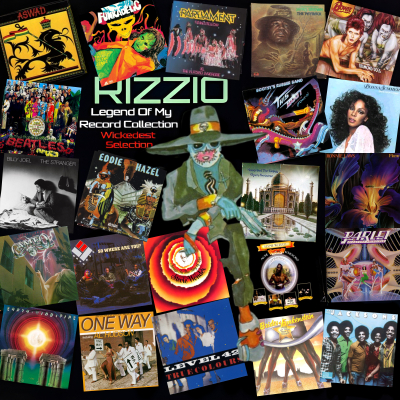

It all started on way back
When my dad played couple tracks
Back to back on the vinyl stax
I'd listen and relax to the reggae
Of Aswad which was bad
Thier outstandin track made me sad
Concrete slaveship was the hit
Back in the year 1976
Which was the long hot summer
Which never seemed like it was goin to end
But started my musical legend
Of sisters and bros who grows and grows
Like Billy Joel you know who's cool
When I went to school people said yo fool
Listenin to that which is wack
And that's a fact
But no it's fiction I said just listen
To yourself copyin everyone else
I didn't care those suckers goin nowhere
With their tunnel vision comments
Made no sense and I grew
And my music did too enter Level 42
On the jazz scene
When I dream of their records
And guitar chords bass lines
Always on time lyrics that rhyme
They're always lookin so fine
Enter the 80's when I turned into a teen
Hip hop entered the scene
But it didn't phase me
Cause i'll be you'll see forever free
To choose and never lose out
On the choice cuts that makes you move your
Butt-to-butt resuscitation
And my new elation is Cameo
I'm their biggest fan you know
My range is gettin bigger
She's strange is a mystifyin song
7 mins 12 seconds long
Larry Blackmon Nathan Leftenant
Tomi Jenkins have vowed
That they will always say Owwwwww
Then came my never endin search
Left me in the learch so to speak
When I freaked out about
Their 9 previous albums deleated
But it never defeated me
Cause I cheated see
And skipped to Boston America
To order their albums and I dreamed of
Playin the drums to their tunes
Deep in space or on the moon
Rotatin on its lunar cycle
I ride my bicycle with my headphones on
So I will never be alone
Without my fix of notes
That always get my votes
But my friend chokes
When he sees me all the time
Ridin my bike playin my music
It makes him sick
But him can't see poor Ashley
And his Sade her music's safe but grey
And fades into the background
Like it has no sound which is bound
I found to make you dig a hole in the ground
But what goes around comes around
I was in Reckless records
I heard these chords
I asked him Is it Cameo
He said Oh Hell no it's Parliament
A track called Do that stuff
Boy that tune was ruff
I bought it and played it nuff
Because it was so tuff so
I went on a search for P Funk
Their concepts can make you drunk
Like you drinkin wine
Look-a-here it's 1989
And my collection is fat
And full of black groups
Like Ohio Players Stevie Wonder
Loose Ends Earth Wind and Fire
Ronnie Laws One Way
Kool and the Gang and Sade
But I never dissed the man
Who gave me this choice
To air my voice B.J.
Is where it started O.K
Straight from the heart and never to part
But it didn't end there
I bought a new 100 watt system to blare
Out my tunes so in every room
You can hear the sweet melodies
In every key out on the streets
And just like skiis it makes you glide
And you feel like you glide
When you listen to a live band on the mix
As we approach 1996
I've let the side down
By buyin rap like Digital Underground
Public Enemy Too Short Ed O.G
NWA Biz Markie and X Clan
Just to name a few brands
As I take you on a far journey
And I hope you see what i'm about
Cause I just love to shout
I do boast so raise your glasses
And give a toast
To my record collection
It is the wickedest selection